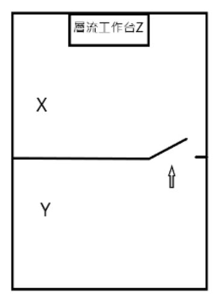

開卷有益 ／
藥師 ／ 調劑學與臨床藥學 ／ 113 年第 1 次113 年第 1 次藥師調劑學與臨床藥學試題與答案
這一頁是民國 113 年第 1 次藥師調劑學與臨床藥學的整份歷屆試題，共 80 題，題目與標準答案出自考選部「國家考試試題及測驗式試題答案」開放資料，其中 79 題附有詳解。以下逐題列出題幹、選項與答案；要計時作答或記錄成績，請用線上練習。
考選部原始場次代碼：113020
線上作答這一科 →
全部 80 題
第 1 題
有關藥用噴霧劑（aerosols）之敘述，下列何者錯誤？
（A） 常用於治療氣喘（B） 加壓裝置裝載了藥品和推進劑（C） 不可用於肌肉傷害之治療（D） 具定量閥可控制劑量答案：（C）
詳解與考點 正解：本題要找的是錯誤敘述；（C）說藥用噴霧劑不可用於肌肉傷害治療並不正確，噴霧劑也可作局部皮膚給藥，用於疼痛或肌肉傷害的局部處置，故選 C。
A：（A）藥用噴霧劑可將藥物送達呼吸道，常見於氣喘等呼吸道疾病治療，敘述正確。
B：（B）加壓式 aerosols 的容器可裝載藥品與推進劑，推進劑提供噴出所需壓力，敘述正確。
D：（D）定量閥（metering valve）可使每次致動釋出近似固定量，能協助控制劑量，敘述正確。
本題考點：藥用噴霧劑（pharmaceutical aerosols）——先以給藥部位區分吸入型與局部皮膚型，不能把噴霧劑限縮為呼吸道製劑；定量閥（metering valve）——判斷定量噴霧劑時，固定單次釋出量是控制劑量的核心構造。
第 2 題
下列何者可做為眼藥水之增稠劑（viscosity enhancer）？
（A） chlorhexidine acetate（B） phenylmercuric nitrate（C） hypromellose（D） chlorobutanol答案：（C）
詳解與考點 正解：眼藥水的增稠劑必須能提高製劑黏度以延長眼表停留時間；（C）hypromellose 為常用纖維素衍生物增稠劑，故選 C。
A：（A）chlorhexidine acetate 的主要用途是抗菌防腐，不是調整眼藥水黏度。
B：（B）phenylmercuric nitrate 是防腐劑成分，作用在抑制微生物，不是提供增稠效果。
D：（D）chlorobutanol 可作防腐劑使用，並非眼用製劑的增稠劑。
本題考點：眼用製劑增稠劑（ophthalmic viscosity enhancer）——看到 hypromellose 等親水性高分子時，判斷其功能是增加黏度與延長停留時間；防腐劑（preservative）——含抗菌活性的成分主要維持多劑量製劑微生物品質，不能與增稠劑混淆。
第 3 題
有關給藥途徑之敘述，下列何者錯誤？
（A） 口頰途徑（buccal route）可用於給與止吐藥（B） 直腸途徑（rectal route）可達到局部或全身作用（C） 陰道途徑（vaginal route）易受到首渡效應影響（D） 吸入途徑（inhalation route）產生效果所需之劑量比口服途徑低答案：（C）
詳解與考點 正解：關鍵在陰道黏膜吸收後不會先經門脈循環；（C）陰道途徑易受首渡效應影響的說法錯誤，經陰道吸收的藥物可避免肝臟首渡代謝，故選 C。
A：（A）口頰途徑可讓藥物經口腔黏膜吸收，也可用於部分止吐藥給藥，敘述正確。
B：（B）直腸途徑可用於局部治療，也能使部分藥物進入全身循環，敘述正確。
D：（D）吸入給藥直接到達作用部位，通常可用較口服低的劑量達到效果，敘述正確。
本題考點：首渡效應（first-pass effect）——經口服吸收後先到肝門脈的途徑才特別受首渡影響，黏膜與吸入途徑通常可避免；給藥途徑（route of administration）——判斷局部或全身效果時，先看吸收部位與是否直接抵達作用器官。
第 4 題
有關raloxifene於骨鬆症治療之敘述，下列何者錯誤？
（A） 須考量靜脈栓塞病史（B） 依creatinine clearance調整劑量（C） 須注意與cholestyramine之交互作用（D） 須考量肺栓塞之風險答案：（B）
詳解與考點 正解：raloxifene 的重點風險是靜脈血栓栓塞，而非依 creatinine clearance 分級調整劑量；（B）所述並非其標準劑量調整方式，故選 B。
A：（A）有靜脈栓塞病史者使用 raloxifene 須特別審慎評估，因其會增加靜脈血栓栓塞風險，敘述正確。
C：（C）cholestyramine 會降低 raloxifene 的吸收，併用時須注意交互作用，敘述正確。
D：（D）肺栓塞屬靜脈血栓栓塞事件，為 raloxifene 治療時須考量的風險，敘述正確。
本題考點：選擇性雌激素受體調節劑（selective estrogen receptor modulator, SERM）——使用 raloxifene 時優先篩檢靜脈血栓栓塞風險，而不是套用腎排除藥物的調整邏輯；腎功能劑量調整（renal dose adjustment）——只有腎臟清除或腎功能會實質改變暴露量的藥物，才以 creatinine clearance 作為主要調整依據。
第 5 題
下列處方之縮寫，何者代表right ear？
（A） ac（B） a. d.（C） a. s.（D） a. u.答案：（B）
詳解與考點 正解：（B）a. d. 是拉丁文 auris dextra，表示 right ear，即右耳，故選 B。
A：（A）ac 為 ante cibum，表示餐前，不是耳別縮寫。
C：（C）a. s. 為 auris sinistra，表示 left ear，即左耳。
D：（D）a. u. 為 auris utraque，表示 both ears，即雙耳。
本題考點：處方拉丁縮寫（prescription Latin abbreviations）——辨識耳用處方時以 auris 為耳、dextra 為右、sinistra 為左、utraque 為雙側判斷；給藥時點縮寫（administration timing abbreviations）——看到 ac 時連結餐前，而非把字母外形誤認為給藥部位。
第 6 題
有關藥品與包裝標示之警語配對，下列何者最不適當？
（A） verapamil－不可與葡萄柚汁併服（B） famotidine－應空腹服用（C） pseudoephedrine－避免在睡前服用（D） chlorpheniramine－服藥後，避免開車或操作危險機械答案：（B）
詳解與考點 正解：最不適當的配對是（B）famotidine 應空腹服用。famotidine 可不受食物限制服用，實際服用時點可依適應症與症狀安排，把空腹說成一律必要過度限縮，故選 B。
A：（A）verapamil 與葡萄柚汁併用可能提高藥物暴露量，標示避免併服是合理警語。
C：（C）pseudoephedrine 可能造成中樞刺激與失眠，避免睡前服用可降低睡眠干擾，敘述適當。
D：（D）chlorpheniramine 具鎮靜作用，服藥後避免開車或操作危險機械是重要的安全警語。
本題考點：用藥時點衛教（medication timing counseling）——先分辨「可隨餐或空腹」與「必須空腹」，不能將彈性服法誤寫成絕對禁則；藥品交互作用與警語（drug interaction and warning）——葡萄柚汁、嗜睡與失眠等可預見風險，應連結到具體避險行為。
第 7 題
下列何者是patient packs之缺點？
（A） 無法提供完整產品資訊（B） 儲存空間的需求增加（C） 降低藥師調劑的效率（D） 不易辨識藥品與製造商答案：（B）
詳解與考點 正解：patient packs 以原廠病人包裝交付藥物，常把標示與衛教資訊保留在包裝上；其實務缺點是（B）每個包裝占用較多儲存空間，故選 B。
A：（A）patient packs 通常保留藥品標示與病人資訊，並非無法提供完整產品資訊。
C：（C）預先包裝可減少現場分裝與貼標作業，通常不會以降低藥師調劑效率作為主要缺點。
D：（D）原廠包裝通常可辨識藥品名稱與製造商，反而有助於追溯與辨識。
本題考點：病人包裝（patient packs）——評估優缺點時，同時看資訊保留、辨識性、調劑流程與儲存體積；原廠包裝（original pack dispensing）——原包交付可保留標示與衛教，但庫存空間與包裝規格彈性可能受限。
第 8 題
下列何者為unit-dose packaging？①blister packs ②aerosol packs ③strip packs ④dropper bottles for ear
（A） ①②③④（B） 僅①③（C） 僅②③④（D） 僅②④答案：（B）
詳解與考點 正解：unit-dose packaging 的判準是一個包裝對應單次給藥劑量；（B）blister packs 與 strip packs 都可將單次劑量個別封裝，故為①③，選 B。
A：（A）除了①③外還納入②④；aerosol packs 與耳用 dropper bottles 通常不是一包一個單次劑量，因此不能全選。
C：（C）漏掉了具個別單位包裝特徵的①blister packs，並誤納入②與④。
D：（D）②與④均通常含多次使用量，且此選項也漏掉符合定義的①與③。
本題考點：單位劑量包裝（unit-dose packaging）——以「一包對應一次給藥」判斷，不以製劑外觀或是否能逐次擠出判斷；泡殼與條狀包裝（blister packs and strip packs）——個別封裝的固體口服劑型是典型單位劑量包裝。
第 9 題
有關疫苗之儲存管理，下列敘述何者錯誤？
（A） 應使用專用冰箱或冷藏櫃且有溫度監控，每日至少查核記錄溫度兩次（B） 若溫度監視卡的D格顯示為藍色，即使目前儲存疫苗的冰箱溫度正常，此批疫苗也不可再用（C） 若冷凍監視片破裂，表示儲存於冰箱內的疫苗曾暴露於0℃以下（D） 查核記錄溫度時，僅須填寫目前冰箱／冷藏庫溫度答案：（D）
詳解與考點 正解：本題要找錯誤的儲存管理敘述；（D）只記錄查核當下的冰箱或冷藏庫溫度不足以掌握兩次查核間的溫度偏離，溫度紀錄還須能反映期間的最高與最低狀態，故選 D。
A：（A）疫苗應使用專用冷藏設備並有溫度監控，定期查核與記錄可及早發現冷鏈異常，敘述正確。
B：（B）溫度監視卡的 D 格呈藍色表示已達不可再使用的判讀狀態，即使目前溫度正常也不能逆轉先前的熱暴露，敘述正確。
C：（C）冷凍監視片破裂表示曾暴露於 0°C 以下，對不可凍結疫苗是重要的品質警訊，敘述正確。
本題考點：冷鏈溫度監控（cold-chain temperature monitoring）——判讀疫苗儲存時要看整段期間的最高與最低溫度，單一瞬間讀值不足以排除偏離；溫度暴露指示器（temperature exposure indicator）——指示器反映既往暴露史，不能因目前回到正常溫度就視為未受影響。
第 10 題
有關臨床研究的敘述，下列何者最適當？
（A） 依據GCP（Good Clinical Practices）規定，為方便受試者領藥，也可由醫師將藥品置於診間給與受試者（B） 單盲（single blinding）研究設計是指研究醫師不知受試者分配組別（C） 三盲（triple blinding）研究設計是指受試者、藥師及研究醫師都不知受試者分配組別（D） 研究計畫案須經IRB（institutional review board）審核同意後進行，而「臨床試驗用藥」由藥師專責管 理答案：（D）
詳解與考點 正解：臨床研究必須先經 IRB 審核同意，且臨床試驗用藥需有受控的保管、調劑、交付與帳務管理；（D）同時符合這兩項原則，故選 D。
A：（A）為方便領藥而將試驗藥品任意置於診間，無法確保受控保管與藥品責任追蹤，不符合試驗藥品管理原則。
B：（B）單盲的典型設計是受試者不知道分配組別，不是以研究醫師不知組別作為固定定義。
C：（C）三盲所涵蓋的角色須由研究設計明確界定，不能固定解作受試者、藥師與研究醫師三者皆不知；研究藥師常須為調劑與帳務管理取得必要資訊。
本題考點：人體試驗審查（institutional review board, IRB）——研究介入人體前先確認已完成審核同意，不能以招募或領藥便利取代程序；試驗藥品管理（investigational product accountability）——保管、調劑、交付與回收均須可追溯，盲態設計也要與責任分工相容。
第 11 題
若將5 g penicillin V泡製成1瓶200 mL口服糖漿，醫囑服用每次125 mg劑量，每次須取用多少mL的糖漿？
（A） 0.5（B） 2.5（C） 3.125（D） 5答案：（D）
詳解與考點 正解：本題先由總藥量求糖漿濃度。5 g = 5,000 mg，濃度 = 5,000 mg / 200 mL = 25 mg/mL；所需體積 = 125 mg / 25 mg/mL = 5 mL，故選 D。
A：（A）0.5 mL × 25 mg/mL = 12.5 mg，只交付處方劑量的十分之一。
B：（B）2.5 mL × 25 mg/mL = 62.5 mg，僅為處方所需 125 mg 的一半。
C：（C）3.125 mL × 25 mg/mL = 78.125 mg，與所需 125 mg 不符。
本題考點：液體製劑濃度（liquid dosage concentration）——先把總藥量與總體積換成 mg/mL，再以處方 mg 劑量除以濃度求 mL；質量單位換算（mass unit conversion）——計算前先完成 1 g = 1,000 mg，避免濃度差一千倍。
第 12 題
60歲女性，身高150公分，體重50公斤，serum creatinine為1.0 mg/dL，若依Cockcroft-Gault計算其 creatinine clearance應為多少mL/min？
（A） 80（B） 47（C） 55（D） 68答案：（B）
詳解與考點 正解：Cockcroft-Gault 式的女性修正值為 0.85，因此 CrCl = [(140 - 60) × 50 kg / (72 × 1.0 mg/dL)] × 0.85。先算未修正值：80 × 50 / 72 = 55.6 mL/min；再乘女性修正值：55.6 mL/min × 0.85 = 47.2 mL/min，約為 47 mL/min，故選 B。
A：（A）80 只等於 140 - 60 的年齡差，尚未代入體重、serum creatinine 與分母 72，不能作為 creatinine clearance。
C：（C）55 約為未乘女性修正值的結果，漏掉 0.85 後會高估此女性的 creatinine clearance。
D：（D）68 可由 80 × 0.85 得到，但仍漏掉體重及 serum creatinine 與 72 的比值，不是完整公式的結果。
本題考點：Cockcroft-Gault equation——成人 creatinine clearance 計算要完整代入年齡、體重與 serum creatinine，女性再乘 0.85；腎功能估算（renal function estimation）——先算未修正值再做性別修正，可快速檢查是否漏乘係數或漏代入分母。
第 13 題
若將400 mL的2.5% w/v 藥品溶液稀釋至1,500 mL，最終濃度是多少% w/v？
（A） 0.67（B） 1.5（C） 0.07（D） 0.15答案：（A）
詳解與考點 正解：稀釋前後溶質量不變。2.5% w/v = 2.5 g / 100 mL，原液中的藥量 = 2.5 g / 100 mL × 400 mL = 10 g；最終濃度 = 10 g / 1,500 mL × 100 mL = 0.6667 g / 100 mL = 0.67% w/v，故選 A。
B：（B）1.5% w/v 回推為 1.5 g / 100 mL × 1,500 mL = 22.5 g，超過原有的 10 g 藥量。
C：（C）0.07% w/v 回推僅有 0.07 g / 100 mL × 1,500 mL = 1.05 g，與稀釋前的 10 g 不符。
D：（D）0.15% w/v 回推為 0.15 g / 100 mL × 1,500 mL = 2.25 g，未保留原有藥量。
本題考點：重量體積百分濃度（% w/v）——先把百分濃度翻成 g/100 mL，才可正確求出原液所含藥量；稀釋守恆（dilution mass balance）——加溶媒只改變體積，溶質質量不變，算完可用回推質量驗算。
第 14 題
Nitrate類藥品之經皮貼片，每日須自皮膚移除該貼片數小時之主要原因為何？
（A） 長時間使用nitrate貼片易引起皮膚過敏（B） nitrate半衰期長，無須整日使用（C） 長時間使用nitrate貼片易引起心律不整（D） 長時間使用nitrate會產生耐受性（tolerance）答案：（D）
詳解與考點 正解：nitrate 經皮貼片每天安排一段無藥間隔，是為了避免持續暴露造成藥效逐漸減弱；（D）長時間使用會產生耐受性是主要原因，故選 D。
A：（A）貼片確可引起局部皮膚反應，但這不是每日移除數小時的主要藥理目的。
B：（B）是否安排無藥間隔取決於維持療效與避免耐受性，不是因 nitrate 半衰期長而無須整日給藥。
C：（C）心律不整不是建立 nitrate-free interval 的主要理由，核心問題是持續暴露後的耐受性。
本題考點：硝酸鹽耐受性（nitrate tolerance）——遇到連續給藥卻安排每日停藥時段時，優先想到耐受性而非半衰期；無藥間隔（drug-free interval）——每日保留無藥間隔，可降低持續 nitrate 暴露所造成的耐受性並維持療效。
第 15 題
欲調製每公克含5 mg neomycin sulfate軟膏20公克，若neomycin sulfate原料粉末的效價（potency）為 650 μg/mg powder，則須秤取多少mg的neomycin sulfate原料粉末？
（A） 153.8（B） 100（C） 76.5（D） 13答案：（A）
詳解與考點 正解：先求成品所需的有效 neomycin sulfate 量：5 mg/g × 20 g = 100 mg。原料效價 650 μg/mg powder = 0.650 mg active/mg powder，因此所需原料粉末 = 100 mg active / 0.650 mg active/mg powder = 153.8 mg powder，故選 A。
B：（B）100 mg 是成品所需有效成分量，直接秤取 100 mg 粉末只會提供 100 mg × 0.650 = 65 mg 有效成分，等同把原料誤當作 100% 效價。
C：（C）76.5 mg 粉末可提供 76.5 mg × 0.650 = 49.725 mg 有效成分，約只有目標量的一半。
D：（D）13 mg 粉末僅可提供 13 mg × 0.650 = 8.45 mg 有效成分，遠低於所需的 100 mg。
本題考點：效價換算（potency calculation）——先分開「需要多少有效成分」與「原料每 mg 實際提供多少有效成分」，再以需要量除以效價；微克與毫克換算（μg-to-mg conversion）——650 μg/mg 必須先換成 0.650 mg/mg，否則秤取量會差一千倍。
第 16 題 待校
有關周邊靜脈營養（PPN）之敘述，下列何者錯誤？
（A） 適合預計接受靜脈營養治療不超過10天者（B） PPN配方中osmolality至少達1,000 mOsm/L（C） PPN配方中final dextrose concentration 5～10%（D） PPN配方中final amino acids concentration 3～5%答案：（B）
第 17 題
有關二合一與三合一靜脈營養配方的比較，下列何者最適當？
（A） 以周邊靜脈給與二合一靜脈營養配方時，避免與IV lipid emulsion一起給與，可降低靜脈炎發生的風險（B） 二合一靜脈營養配方細菌生長的風險較低（C） 二合一靜脈營養配方與其他藥品的相容性（compatibility）較差（D） 三合一靜脈營養配方若須添加高濃度的電解質時較有彈性答案：（B）
詳解與考點 正解：二合一靜脈營養配方含胺基酸與葡萄糖而不含脂肪乳劑；缺少脂肪乳劑時，較不利於微生物生長，因此（B）二合一配方的細菌生長風險較低最適當，故選 B。
A：（A）周邊靜脈炎的主要判斷重點是配方滲透壓與輸注條件，單純避免與 IV lipid emulsion 一起給與，不能解決二合一配方本身可能過高的滲透壓。
C：（C）二合一配方沒有脂肪乳劑的乳化安定性限制，與其他藥品併用的相容性通常不會比三合一配方差。
D：（D）高濃度電解質可能破壞脂肪乳劑穩定性，三合一配方反而較受此限制，不能說較有彈性。
本題考點：二合一與三合一靜脈營養（2-in-1 and 3-in-1 parenteral nutrition）——比較配方時先看是否含脂肪乳劑，這會影響微生物風險、安定性與添加物限制；脂肪乳劑安定性（lipid emulsion stability）——高電解質負荷可能使乳化系統不穩定，需以相容性與安定性而非僅熱量判斷。
第 18 題
調配TPN之清淨室中，有關high-efficiency particulate air（HEPA）filters之敘述，下列何者正確？
（A） 必須裝設於清淨室的出氣口（B） 可以過濾99.997%的0.5 μm的空氣微粒（C） 可以過濾99.997%的0.3 μm的空氣微粒（D） 前後的濾壓差130 Pascal時，表示必須更換新濾網答案：（C）
詳解與考點 正解：HEPA filter 的額定效率以 0.3 μm 的測試粒徑為判準；（C）將其與題目所採的過濾效率正確配對，故選 C。
A：HEPA filter 的功能是供應已過濾的潔淨空氣，重點在送風端的空氣品質控制，不是必須裝在清淨室出氣口。
B：0.5 μm 不是本題 HEPA filter 額定效率所用的標準測試粒徑。看似只差粒徑大小，但規格判讀必須回到 0.3 μm。
D：濾網是否更換須依設備驗證、壓差趨勢及操作規範判定，不能僅以 130 Pascal 這一數值單獨作為必換濾網的結論。
本題考點：HEPA filter 額定效率——判讀潔淨室濾網規格時，先核對測試粒徑與效率是否成對；潔淨室空氣流向（cleanroom airflow）——無菌調製要控制的是送入操作區的空氣潔淨度，不把送風端與排風端混為一談。
第 19 題
Pemetrexed注射劑不可使用lactated Ringer's injection稀釋，主要是因為lactated Ringer's injection 中的那一個離子？
（A） 鉀（B） 鈉（C） 氯（D） 鈣答案：（D）
詳解與考點 正解：Pemetrexed 不可用 lactated Ringer's injection 稀釋的關鍵是 calcium 所致的配伍不相容性；該溶液含有 calcium，故選 D。
A：lactated Ringer's injection 雖含 potassium，但 potassium 不是 Pemetrexed 避用此稀釋液的主要相容性問題。
B：sodium 是維持溶液滲透壓的常見離子，並非本題所問的禁忌來源。
C：chloride 也存在於 lactated Ringer's injection 中，但不能解釋 Pemetrexed 與該溶液的特異性不相容。分辨關鍵在 calcium，不是只要是電解質就都會造成相同問題。
本題考點：注射劑配伍不相容性（intravenous incompatibility）——調製前先辨認稀釋液中的關鍵離子，再核對藥品對該成分的限制；lactated Ringer's injection——遇到含 calcium 的輸液時，應特別留意是否會與處方藥發生沉澱或化學不相容。
第 20 題
依據USP，下列何種preservative可添加之濃度限量（maximum concentration limit, %）最低？
（A） chlorobutanol（B） cresol（C） phenol（D） thimerosal答案：（D）
詳解與考點 正解：本題比較的是 USP 所列 preservative 的最高可添加濃度，不是比較抗菌效果強弱；thimerosal 的濃度限量在四者中最低，故選 D。
A：chlorobutanol 的最高可添加濃度高於 thimerosal，不能選為最低者。
B：cresol 也是可在較高濃度範圍使用的 preservative；看似具有強抗菌性不代表其 maximum concentration limit 最低。
C：phenol 的濃度限量同樣高於 thimerosal，故不符合題幹的比較條件。
本題考點：注射劑防腐劑（preservatives in parenterals）——比較配方限量時，直接比較各成分的 maximum concentration limit，不以藥效印象代替規格；USP 規格判讀——遇到藥典數值題時，先確認題目問的是最低、最高或可添加範圍，避免把方向讀反。
第 21 題
下列何者屬於物理性變化？
（A） 氧氣滲入注射劑引起之變化（B） 光線照射注射劑引起之變化（C） 藥品活性成分降解（degradation）（D） 加入另一種溶媒而造成主成分沉澱答案：（D）
詳解與考點 正解：加入另一種溶媒後發生沉澱，是因溶解度與溶媒組成改變而使主成分由溶液析出，並未必形成新物質，屬物理性變化，故選 D。
A：氧氣滲入可造成氧化（oxidation），使藥品分子結構改變，屬化學性變化。
B：光線可引起光分解（photodegradation），其本質是藥品的化學鍵受光能影響而降解。
C：藥品活性成分降解（degradation）直接表示主成分發生化學分解，不能歸為物理性變化。
本題考點：注射劑安定性（parenteral stability）——先判斷是否有分子結構改變；有氧化、光分解或降解即為化學性變化；溶媒效應與沉澱（precipitation）——溶解度下降導致析出時，若主成分未分解，先歸類為物理性不安定。
第 22 題
一般而言，化療藥品產生hematologic toxicities的先後順序，下列何者正確？①anemia ②neutropenia ③thrombocytopenia
（A） ①②③（B） ②①③（C） ②③①（D） ③①②答案：（C）
詳解與考點 正解：化療造成骨髓抑制時，周轉最快的 neutrophils 最早下降，其後為 platelets，而 erythrocytes 壽命較長，anemia 通常最晚明顯；順序為②→③→①，故選 C。
A：①anemia 被排在最前，忽略 erythrocytes 的循環壽命較長，與一般毒性出現順序不符。
B：②neutropenia 放在最前正確，但把①anemia 排在③thrombocytopenia 前面，仍把較晚出現的紅血球毒性提前了。
D：③thrombocytopenia 被放在②neutropenia 前，未反映 neutrophils 對骨髓抑制最早顯現的特性。
本題考點：化療相關骨髓抑制（chemotherapy-induced myelosuppression）——用各血球的周轉速度判斷毒性先後，neutropenia 通常最早；血球壽命與毒性時序（cell lifespan）——在一般排序題中，壽命越短的細胞系越先反映骨髓抑制。
第 23 題
有關調製危害性注射藥品的環境，下列敘述何者正確？
（A） 清淨室相對於前室應為正壓，操作臺須使用水平式層流臺（B） 清淨室相對於前室應為負壓，操作臺須使用水平式層流臺（C） 清淨室相對於前室應為正壓，操作臺須使用垂直式層流臺（D） 清淨室相對於前室應為負壓，操作臺須使用垂直式層流臺答案：（D）
詳解與考點 正解：調製危害性注射藥品時，環境需防止污染空氣外逸並保護操作人員，因此清淨室相對前室應維持負壓，且使用垂直式層流的生物安全操作臺，故選 D。
A：正壓會使空氣由危害性藥品調製區往外流出，且水平式層流臺偏向保護產品，不能充分保護操作人員。
B：清淨室相對前室為負壓的方向正確，但水平式層流臺的氣流設計不適合危害性藥品調製。
C：垂直式層流臺符合人員防護的需求，但正壓仍會增加污染物外逸的風險。
本題考點：危害性藥品調製（hazardous drug compounding）——先同時檢查壓差方向與操作臺型式，兩者都要能降低人員暴露；負壓隔離（negative pressure containment）——危害性藥品區的壓力須低於相鄰區域，使可能受污染的空氣不向外逸散。
第 24 題
有關抗癌藥品製備之敘述，下列何者正確？
（A） cisplatin須以5% dextrose稀釋，因dextrose可減少腎毒性（B） gemcitabine回溶後濃度須≦40 mg/mL，因濃度過高，藥品無法完全溶離（C） irinotecan須以normal saline inj.稀釋，因irinotecan在鹽水比糖水中穩定（D） oxaliplatin須以norma saline inj.稀釋，因oxaliplatin在鹽水中可減少神經毒性答案：（B）
詳解與考點 正解：gemcitabine 回溶後須控制濃度不超過 40 mg/mL，否則溶解度不足而可能無法完全溶離；（B）正確描述此調製限制，故選 B。
A：cisplatin 的穩定性仰賴含 chloride 的稀釋環境，不是以 5% dextrose 稀釋來減少腎毒性。
C：irinotecan 可使用的稀釋液不只 normal saline，不能因稱鹽水較糖水穩定，就推論其必須以鹽水稀釋。
D：oxaliplatin 應避免接觸 chloride-containing 溶液，不能以 normal saline 稀釋；神經毒性也不是由鹽水稀釋所降低。
本題考點：抗癌藥品調製（antineoplastic drug preparation）——依各藥品的溶解度、稀釋液與離子相容性分別核對，不能以同類藥共用規則；濃度限制（concentration limit）——回溶濃度上限通常是為避免未完全溶解或析出，不是任意的操作習慣。
第 25 題
醫師處方mannitol 7 g/hr IV infusion 6小時；若藥局mannitol現品為20%（w/v），共需要幾mL的20% mannitol？
（A） 35（B） 42（C） 175（D） 210答案：（D）
詳解與考點 正解：先算總劑量，再把 20%（w/v）換成每 mL 所含 mannitol 的量。總劑量 = 7 g/h × 6 h = 42 g。20%（w/v）= 20 g/100 mL = 0.2 g/mL。所需體積 = 42 g / 0.2 g/mL = 210 mL，故選 D。
A：35 mL = 7 g，僅相當於 1 h 的處方量，漏掉了 6 h 的輸注時間。
B：42 mL 是把總劑量 42 g 直接當成體積，沒有使用 20%（w/v）的濃度換算。
C：175 mL × 0.2 g/mL = 35 g，只足以供應 5 h 的 7 g/h 輸注，少算了 1 h。
本題考點：輸注總劑量（infusion dose）——先以速率乘時間取得總質量，再進行濃度換算；重量體積百分濃度（% w/v）——20%（w/v）表示 20 g/100 mL，換成 g/mL 後才可用體積 = 劑量／濃度求解。
第 26 題
有關parenteral products之敘述，下列何者錯誤？
（A） 不可添加抗氧化劑（B） 懸浮液劑中，直徑5～10 μm之固體粒子＜5%（C） irrigation solution屬於large volume parenteral product（D） 對藥品的相容性而言，semi-rigid塑膠容器較PVC容器佳答案：（A）
詳解與考點 正解：題幹要找錯誤敘述。注射劑可視配方需要添加適當抗氧化劑，以抑制氧化性降解；（A）以不可添加作絕對敘述，該敘述錯誤，故選 A。
B：注射用懸浮液須限制較大粒子的比例；（B）所述直徑 5-10 μm 粒子比例小於 5% 的分布限制，是為降低粒子造成阻塞等風險，屬正確要求。
C：irrigation solution 通常以較大體積供沖洗使用，歸在 large-volume parenteral product 的範疇。
D：semi-rigid 塑膠容器相較 PVC 較少受到塑化劑遷移或藥品吸附等材料因素影響，對藥品相容性較有利。
本題考點：注射劑添加物（parenteral excipients）——看到不可添加這類絕對語句時，先檢查是否有為防氧化或維持安定性而允許的輔料；注射用懸浮液粒徑控制（particle-size distribution）——判讀規格時，確認其是否在限制偏大粒子比例以維持使用安全。
第 27 題
有關multiple-dose vials之敘述，下列何者錯誤？
（A） 為厚壁玻璃容器（B） 不須添加抗菌劑（C） 可重複抽取所需劑量（D） 橡膠瓶蓋可能會與製劑產生交互作用答案：（B）
詳解與考點 正解：multiple-dose vials 會被重複穿刺與抽取，為降低微生物污染風險，通常需添加適當抗菌劑；（B）稱不須添加抗菌劑，該敘述錯誤，故選 B。
A：multiple-dose vials 的玻璃容器須能承受多次使用，厚壁玻璃是其常見包裝設計。
C：可從同一瓶中重複抽取不同次所需劑量，正是 multiple-dose vials 與單次使用容器的重要差異。
D：橡膠瓶蓋可能與製劑發生吸附、萃取物釋出等交互作用，因此包材相容性本來就須評估。
本題考點：多劑量小瓶（multiple-dose vials）——判斷容器是否需要 preservative 時，先看其是否會被重複穿刺使用；包材相容性（container-closure compatibility）——玻璃瓶與橡膠塞都可能影響製劑，配方評估不能只看主藥。
第 28 題
有關opioids patient-controlled analgesia（PCA）之使用，下列何者正確？
（A） 對未曾使用opioids的病人來說，起始劑量比起傳統靜脈給藥，單次劑量較少（B） 較傳統靜脈給藥，容易造成opioids上癮（C） 較傳統靜脈給藥，血中藥品濃度波動較大（D） 若有breakthrough pain，可合併使用buprenorphine答案：（A）
詳解與考點 正解：對未曾使用 opioids 的病人，PCA 的需求劑量會從較小單次劑量開始，以便在鎮痛與呼吸抑制風險間逐步調整；相較傳統間歇靜脈給藥，（A）正確，故選 A。
B：PCA 讓病人在設定的安全限制內自我給藥，不能據此推論比傳統靜脈給藥更容易造成 opioid 成癮。
C：PCA 可依疼痛即時給予小劑量，目的正是減少傳統間歇給藥造成的血中濃度峰谷波動。
D：buprenorphine 對 μ receptor 親和力高且為部分致效劑，可能削弱全致效 opioid 的效果；breakthrough pain 不宜以此作為例行合併策略。
本題考點：病人自控止痛（patient-controlled analgesia，PCA）——起始時依 opioid exposure 與病人風險設定較保守的 demand dose；濃度峰谷（peak-trough fluctuation）——PCA 以小量、依需求給藥維持鎮痛，判斷時應與間歇大劑量的峰谷比較；部分致效劑交互作用（partial agonist interaction）——遇到 buprenorphine 與全致效 opioid 時，先考慮 receptor 親和力造成的拮抗效應。
第 29 題
有關fentanyl PCA之敘述，下列何者錯誤？
（A） 屬於一級管制藥品，購入或支出一定要登載（B） 須使用管制藥品專用處方箋，並保存5年（C） 常用的給藥濃度為10 μg/mL（D） 可設定lockout interval，以避免過度使用答案：（A）
詳解與考點 正解：題幹要找錯誤敘述。fentanyl 為第二級管制藥品，不是第一級管制藥品；（A）將分級列錯，故選 A。
B：fentanyl PCA 的處方須依管制藥品處方管理要求使用專用處方箋並保存 5 年，敘述符合管制藥品管理原則。
C：10 μg/mL 是 fentanyl PCA 常用的給藥濃度之一，仍須配合處方與幫浦參數使用。
D：lockout interval 在兩次需求劑量間設下最短間隔，可限制短時間內重複給藥，是 PCA 的重要安全機制。
本題考點：管制藥品分級（controlled drug scheduling）——先辨認藥品的正確分級，再判斷登載與處方管理義務；PCA 安全設定（PCA safety settings）——lockout interval 用來限制可重複給藥的頻率，不能把它當成單純的疼痛評估時間。
第 30 題
Furosemide injection與下列何項注射藥品在normal saline中相容？
（A） dopamine（B） dobutamine（C） diazepam（D） aminophylline答案：（D）
詳解與考點 正解：Furosemide injection 為偏鹼性製劑，併用注射藥品時須避免因 pH 差異造成不相容；在 normal saline 中，aminophylline 與其相容，故選 D。
A：dopamine 製劑的酸鹼環境與 furosemide 不同，混合後有相容性風險，不能列為本題的相容組合。
B：dobutamine 也不適合依本題條件與 furosemide 在 normal saline 中混合使用。
C：diazepam 的水溶性有限，與 furosemide 併用時容易出現配伍問題；看似都是靜脈注射藥，並不表示可共用同一輸液。
本題考點：靜脈注射配伍（intravenous compatibility）——先比較藥品的 pH、溶解度與稀釋液，再判斷是否能同袋或 Y-site 使用；Furosemide injection——偏鹼性注射劑特別要警覺與酸性或溶解度受限製劑混合後的沉澱風險。
第 31 題
如圖進行無菌調製（不含危害性藥品），所需的調劑室設備，下列何者較佳？

（A） 氣壓X＞Y，X＝ISO Class 5，Y＝ISO Class 7（B） 氣壓X＜Y，X＝ISO Class 7，Z＝ISO Class 5（C） 氣壓X＞Y，X＝ISO Class 7，Z＝ISO Class 5（D） 氣壓X＜Y，X＝ISO Class 5，Y＝ISO Class 7答案：（C）
詳解與考點 正解：圖中 X 室內設有層流工作台 Z（一級屏障），X 室本身作為容納此工作台的房間屬 ISO Class 7 之無菌調製室（buffer room），Y 室為其外側相鄰的空間。無菌調製（不含危害性藥品）時，潔淨度較高的 X 室應維持較外側空間為正壓，使氣流由乾淨處往外流出、阻絕微粒逆流進入，故氣壓 X>Y，答案為 C。
A：把 X 室（容納工作台的調製室）誤標為 ISO Class 5、Y 室為 ISO Class 7，混淆了工作台本身的潔淨度等級與其所在房間的等級——工作台內部才是 ISO 5，房間本身是 ISO 7。
B、D：兩者都把氣壓方向寫反（X<Y），與潔淨區應維持正壓、以氣流方向阻絕外部空氣逆流的原則相反。
本題考點：無菌調製設施之潔淨等級分層（cleanroom classification cascade）——一級屏障（工作台）ISO 5 內嵌於二級屏障（調製室）ISO 7 之中；壓差方向（pressure differential）——非危害性藥品調製時，潔淨度愈高的區域須維持愈正的氣壓，以氣流方向阻絕污染物由低潔淨區進入高潔淨區。
第 32 題
下列何者可安全用於全靜脈營養（TPN）中，一般做為主要carbohydrate來源？
（A） fructose（B） sorbitol（C） dextrose（D） xylitol答案：（C）
詳解與考點 正解：全靜脈營養需要可預期代謝、可安全提供熱量的主要 carbohydrate；dextrose 是一般 TPN 的標準主要醣類來源，故選 C。
A：fructose 並非一般 TPN 的常規主要醣類，代謝耐受性與安全性限制使其不適合作為首選。
B：sorbitol 是糖醇，不是 TPN 中用來常規供應主要熱量的標準 carbohydrate。
D：xylitol 也不是一般 TPN 的主要醣類來源；可供能不等於適合作為常規大量輸注的主成分。
本題考點：全靜脈營養（total parenteral nutrition，TPN）——選主要 carbohydrate 時，優先選代謝路徑明確、臨床使用經驗充足的 dextrose；糖醇代謝（polyol metabolism）——判斷替代醣類時，不能只看是否能提供熱量，還要看大量靜脈輸注的代謝安全性。
第 33 題
下列何者會與鈣片產生交互作用？
（A） amoxicillin（B） cephalexin（C） clarithromycin（D） tetracycline答案：（D）
詳解與考點 正解：tetracycline 可與 calcium 形成難溶性螯合物，使口服後可吸收的游離藥物減少；（D）會與鈣片產生臨床重要交互作用，故選 D。
A：amoxicillin 的吸收不以與 calcium 螯合為主要限制，並非本題所指的典型交互作用。
B：cephalexin 不具有 tetracycline 類與金屬離子形成難溶螯合物的特性。
C：clarithromycin 的交互作用重點不在與 calcium 螯合，故不符合題幹。
本題考點：金屬離子螯合（chelation interaction）——口服藥遇到 calcium、iron 或 magnesium 時，先辨認是否為會形成難溶複合物的藥品；Tetracycline absorption——判斷 tetracycline 類交互作用時，重點是吸收下降，不是抗菌作用突然增強或減弱。
第 34 題
承上題，如果處方有上述合併用藥，藥師應如何建議最適當？
（A） 將抗生素與鈣片錯開服用時間，以避免交互作用（B） 回去詢問醫師是否可更改抗生素處方（C） 回去詢問醫師是否可服用鈣片（D） 藥師只需將正確處方藥品交付病人答案：（A）
詳解與考點 正解：tetracycline 與鈣離子在腸道中形成不溶性螯合物，機轉屬吸收層次的競爭而非藥效或毒性加乘，只要把兩者服用時間錯開（通常建議間隔 2 至 3 小時以上），tetracycline 便能維持吸收，藥師應建議將抗生素與鈣片錯開服用時間，故選 A。
B、C：回去詢問醫師是否可更改抗生素處方或是否可服用鈣片，都屬於不必要的升級處理。這類吸收層次的交互作用透過調整服藥時間即可化解，不需要因此變動處方或停用鈣片。
D：藥師只需將正確處方藥品交付病人，忽略了已知交互作用的存在。核對處方是否正確只是調劑的一部分，發現具臨床意義的交互作用時，主動用藥指導本身就是藥師應盡的責任，單純交付藥品並不足夠。
本題考點：tetracycline 與二價／三價陽離子的螯合交互作用（chelation interaction）——判準是機轉屬吸收層次而非藥效層次，處理方式優先考慮錯開服藥時間而非換藥；藥師介入交互作用的層級（intervention hierarchy）——可用給藥時間解決的問題，不需要升級到要求醫師更改處方。
第 35 題
有關醫院藥品管理與使用，下列流程何者正確？
（A） 手寫處方較方便，應鼓勵使用（B） 為縮短護理師取得藥品時間，將多數藥品列為可以直接取用的病房常備藥（C） 醫師開立處方後，護理師可直接給藥（D） 條碼給藥是改善護理師給藥錯誤的最佳方法之一答案：（D）
詳解與考點 正解：條碼給藥以病人身分與藥品條碼逐項核對，可在給藥前攔截病人、藥品、劑量、途徑或時間不符的錯誤，是改善護理師給藥錯誤的有效方法之一，故選 D。
A：手寫處方容易有字跡辨識與轉錄問題，醫院藥品管理通常應降低而非鼓勵其使用。
B：將多數藥品列為病房常備藥雖可能縮短取得時間，卻會增加儲存、選取與繞過藥師覆核的風險。
C：醫師開立處方後仍應經適當的藥師覆核、調劑與給藥流程，不能直接跳到護理師給藥。
本題考點：條碼給藥（barcode medication administration）——在給藥點以掃碼比對病人與藥品資訊，讓錯誤在接觸病人前被攔截；用藥流程安全（medication-use process）——縮短流程不能犧牲處方覆核與調劑核對等安全關卡。
第 36 題
下列臨床檢驗數值之正常範圍，何者正確？
（A） potassium：3.5～5 mg/mL（B） creatinine clearance（CrCl）：90～130 mL/min（C） aspartate aminotransferase（AST）：0～35 units/mL（D） prostate-specific antigen（PSA）：0～4 mg/mL答案：（B）
詳解與考點 正解：creatinine clearance（CrCl）用來估計腎臟清除能力，常以 mL/min 表示；（B）的 90-130 mL/min 符合一般成人正常範圍，故選 B。
A：potassium 濃度通常以 mEq/L 或 mmol/L 表示，不會以 mg/mL 作為此正常範圍的單位。
C：aspartate aminotransferase（AST）活性通常以 units/L 報告，units/mL 的單位錯誤。
D：prostate-specific antigen（PSA）常以 ng/mL 表示，mg/mL 的量級與單位都不合理。
本題考點：臨床檢驗單位（clinical laboratory units）——先核對檢驗項目的單位，再比較數值是否落在常用範圍；腎功能估計（creatinine clearance，CrCl）——看到 mL/min 時應聯想到清除能力，不把它與血中濃度單位混用。
第 37 題
為減少調劑錯誤的發生，在建立標準調劑作業流程時應考量下列那些作法？①避免單一藥師獨自完成整個調 劑作業 ②藥名發音相似或外觀相似的藥品不要放在相鄰位置 ③成分相同、含量不同的藥品隔開擺放
（A） 僅①②（B） 僅①③（C） 僅②③（D） ①②③答案：（D）
詳解與考點 正解：①以獨立覆核避免單一人員一路完成所有步驟，②分開放置名稱或外觀相似藥品，③分開擺放同成分不同含量藥品，三者都能在不同環節降低調劑錯誤，故選 D。
A：①與②正確，但漏掉同成分不同含量藥品的隔離措施，仍可能發生強度選取錯誤。
B：①與③正確，但未處理藥名發音相似或外觀相似藥品相鄰造成的選取風險。
C：②與③正確，但少了獨立覆核的流程設計，無法降低單一人員連續犯錯而未被發現的風險。
本題考點：獨立覆核（independent double check）——高風險調劑流程要讓另一人或另一道核對步驟能發現前一步錯誤；相似藥品管理（look-alike/sound-alike medications）——名稱、外觀或強度相近的藥品應以儲位與標示設計降低誤選機會。
第 38 題
若每日上班時間皆為8小時，下列24小時制的班別，何者最容易發生用藥疏失？
（A） 23:00～07:00（B） 08:00～16:00（C） 12:00～20:00（D） 14:00～22:00答案：（A）
詳解與考點 正解：23:00～07:00 的夜班與人體原本應睡眠的時段重疊，清醒度、注意力與工作記憶較容易因晝夜節律失調及累積疲勞而下降；在需反覆核對藥名、劑量與病人的調劑工作中，這會提高用藥疏失風險，故選 A。
B：08:00～16:00 大致落在日間清醒期，雖仍須遵守核對程序，但相較夜班較少受到生理性睡意影響。
C：12:00～20:00 包含午后可能降低警覺的時段，但沒有跨越夜間主要睡眠期，疲勞風險通常低於整段夜班。
D：14:00～22:00 屬較晚的日間至晚間班別；接近下班時仍可能疲勞，但與夜班的晝夜節律反轉不同。
本題考點：晝夜節律（circadian rhythm）——比較班別風險時，先看工作時段是否與正常睡眠期重疊；疲勞相關用藥疏失（fatigue-related medication error）——涉及核對與判讀的工作在清醒度下降時要以雙重核對及交班機制補強。
第 39 題
有關type B藥品不良反應之敘述，下列何者錯誤？
（A） 不常見（B） 具可預測性（C） 與劑量無相關（D） 與藥理作用無相關答案：（B）
詳解與考點 正解：type B 藥品不良反應屬較罕見、非預期且通常與藥物已知藥理作用無直接關係的反應，常見於特異體質或免疫機轉，亦多不呈劑量相關；（B）具可預測性與其特性相反，故選 B。
A：type B 反應在整體使用者中並不常見，此敘述正確，故非本題所問的錯誤項。
C：type B 反應通常不是隨劑量增加而規律增加，與劑量無相關是其與 type A 反應的重要分界。
D：type B 反應不以藥物可預期的藥理作用延伸為主，與藥理作用無相關的敘述正確。
本題考點：藥品不良反應分類（type A and type B adverse drug reactions）——遇到可預測且劑量相關的反應先歸向 type A；特異性或免疫性反應（idiosyncratic or immune-mediated reaction）——罕見、非預期且與既知藥理作用脫鉤時，優先判為 type B。
第 40 題
有關上市後藥品使用評估（DUE）的研究方法，下列敘述何者正確？
（A） 通常case-control study花費的時間比cohort study更長（B） 小兒off-label使用的藥品不建議進行DUE研究（C） 前瞻性（prospective）研究比較可以控制干擾因子（D） 臨床上常用之藥品不須再進行DUE研究答案：（C）
詳解與考點 正解：上市後藥品使用評估要判讀研究設計能否降低偏差。前瞻性（prospective）研究可在結果發生前先界定收案、暴露與追蹤資料，並蒐集可能的干擾因子加以控制，因此（C）正確，故選 C。
A：case-control study 從已發生結果的個案回溯暴露，通常比需長期追蹤暴露者的 cohort study 省時；兩者的時間方向剛好相反。
B：小兒 off-label 用藥的安全性與適當性資料常較不足，正是可透過 DUE 追蹤使用型態與結果的情境，不能因為 off-label 而排除研究。
D：常用藥仍可能出現不適當處方、族群差異或新安全訊號；DUE 的判準是使用是否合理，不是藥品是否常用。
本題考點：藥品使用評估（Drug Use Evaluation, DUE）——當需要確認實際處方是否適當、安全與有效時，可用系統性資料評估；前瞻性研究（prospective study）——要在設計階段蒐集干擾因子並控制其影響時，優先考慮前瞻追蹤；研究設計與時間性（temporality）——比較 cohort 與 case-control 時，先辨認是由暴露追結果，或由結果回溯暴露。
第 41 題
有關用藥安全之敘述，下列何者錯誤？
（A） 因調劑錯誤導致病人傷害也屬於藥品不良事件（adverse drug events）（B） 醫師直接於醫療資訊系統開立處方有助於增進病人安全（C） 藥師進行處方建議時就已確保病人安全，完成紀錄與否並不重要（D） 已抽藥之針筒應清楚標示藥名及給藥途徑，避免潛藏給藥疏失答案：（C）
詳解與考點 正解：處方建議本身只是用藥安全流程的一環，仍須留下可追溯紀錄，讓後續照護者知道發現的問題、建議內容與處置結果；（C）把紀錄說成不重要，會破壞交接、追蹤與事件分析，故選 C。
A：因調劑錯誤而造成病人傷害，屬與藥物治療相關的傷害事件，可歸入藥品不良事件（adverse drug events），此敘述正確。
B：醫師直接在醫療資訊系統開立處方可減少手寫辨識與轉錄錯誤，雖不能取代審方，仍有助於病人安全。
D：已抽藥的針筒若缺少藥名與給藥途徑標示，容易在交接或給藥時混淆；清楚標示是基本的防錯措施。
本題考點：藥品不良事件（adverse drug event）——判斷時看病人是否因用藥流程而受傷害，調劑錯誤造成傷害也包含在內；用藥安全紀錄（medication safety documentation）——提出建議後要可追溯地記錄與追蹤，才能支撐交班及持續改善。
第 42 題
下列何者產生肝臟毒性的可能性最小？
（A） carmustine（B） epirubicin（C） methotrexate（D） cytarabine答案：（B）
詳解與考點 正解：比較抗癌藥的器官毒性時，要分辨主要劑量限制毒性與可能出現但非主要的肝功能異常。epirubicin 的代表性累積毒性偏向心臟毒性；相較於其餘選項，肝臟毒性的可能性最小，故選 B。
A：carmustine 除骨髓抑制等毒性外，仍可能造成肝功能異常，不能列為肝毒性風險最低者。
C：methotrexate 與肝功能異常及長期使用相關的肝臟傷害有明確關聯，是此題的重要對照。
D：cytarabine 治療期間可見肝功能異常，尤其在高劑量或合併其他風險因素時，不能排除肝臟毒性。
本題考點：抗癌藥器官毒性（organ-specific toxicity of anticancer drugs）——比較藥物時先抓各藥最具代表性的劑量限制毒性；anthracycline 心臟毒性（anthracycline cardiotoxicity）——遇到 epirubicin 類藥物時，優先辨識累積性心臟風險，而非把肝毒性當作其典型主毒性。
第 43 題
張先生有心血管疾病，長期服用下列藥品。最近3個月容易疲倦且體重增加，檢查發現T3、T4與TSH異常。若 為藥品不良反應，最可能是何項藥品所造成？
（A） valsartan 80 mg QD（B） felodipine 5 mg QD（C） amiodarone 200 mg QD（D） rosuvastatin 5 mg QD答案：（C）
詳解與考點 正解：疲倦、體重增加合併 T3、T4 與 TSH 異常，指向甲狀腺功能失調；amiodarone 含碘且會影響甲狀腺荷爾蒙的合成與周邊代謝，長期使用可造成甲狀腺低下或亢進，因此最符合本例，故選 C。
A：valsartan 的常見監測重點是血壓、腎功能與血鉀，不是造成 T3、T4、TSH 異常的典型藥物。
B：felodipine 可能造成周邊水腫、潮紅或心悸等血管擴張相關反應，不能解釋甲狀腺功能檢查的組合。
D：rosuvastatin 的重要不良反應偏向肌肉症狀與肝功能異常，與本例的甲狀腺檢驗線索不符。
本題考點：amiodarone 相關甲狀腺疾病（amiodarone-induced thyroid dysfunction）——長期用藥者出現體重與精神體力改變時，要連同 TSH 與甲狀腺荷爾蒙判讀；藥品不良反應歸因（adverse drug reaction causality）——由症狀與檢驗異常先鎖定受影響器官，再對照各藥的典型毒性。
第 44 題
下列何者不是NSAIDs引起胃潰瘍之危險因子？
（A） 併用SSRI抗憂鬱劑（B） 併用低劑量aspirin（C） 併用bisphosphonates（D） 性別答案：（D）
詳解與考點 正解：NSAIDs 相關胃潰瘍要看是否有會加重黏膜傷害或出血的共用藥物與病史；性別本身不是此類潰瘍的典型獨立危險因子，因此（D）不是危險因子，故選 D。
A：SSRI 會影響血小板的 serotonin 攝取，與 NSAIDs 併用時可提高上消化道出血風險，此敘述符合危險因子。
B：低劑量 aspirin 仍會抑制血小板及傷害胃黏膜，與 NSAIDs 併用會增加潰瘍或出血風險。
C：bisphosphonates 可造成上消化道黏膜刺激；與 NSAIDs 併用時需特別留意胃腸道不良反應。
本題考點：NSAIDs 胃腸道毒性（NSAID gastrointestinal toxicity）——判斷風險時優先找既往潰瘍、高風險共病與會增加出血或黏膜傷害的併用藥；藥物交互風險（drug-related risk factor）——兩種各自增加胃腸道傷害或出血的藥物併用時，不能因單一藥物劑量低而忽略風險。
第 45 題
與成人比較，有關一般新生兒藥動學之敘述，下列何者錯誤？
（A） 外用藥品之吸收較好（B） 腸胃蠕動較快，口服藥品吸收較差（C） 腎臟排除較差（D） CYP3A4代謝較差答案：（B）
詳解與考點 正解：一般新生兒的胃排空與腸胃蠕動通常較成人慢，口服藥吸收常較慢且變異較大；（B）說腸胃蠕動較快並直接推成吸收較差，與新生兒的生理成熟度不符，故選 B。
A：新生兒皮膚較薄且體表面積相對體重較大，外用藥的經皮吸收可能較成人高，此敘述正確。
C：新生兒腎絲球過濾與腎小管功能尚未成熟，腎臟排除能力較差，須留意腎排除藥物的累積。
D：新生兒的 CYP3A4 代謝能力未成熟，肝臟代謝通常較成人差，此敘述正確。
本題考點：新生兒藥物動力學（neonatal pharmacokinetics）——比較成人與新生兒時，先逐一檢查皮膚、腸胃、肝臟與腎臟的成熟度；口服吸收變異（variable oral absorption）——胃排空與腸胃蠕動未成熟時，不能把吸收變慢簡化成固定的吸收較差；腎臟成熟（renal maturation）——腎排除藥物在新生兒要先評估清除能力不足的風險。
第 46 題
下列何者最不建議用於治療neonatal seizures？
（A） phenobarbital（B） valproic acid（C） phenytoin（D） lorazepam答案：（B）
詳解與考點 正解：新生兒的肝臟代謝與排除功能未成熟，valproic acid 具有肝毒性及代謝性不良反應風險，通常不是治療 neonatal seizures 的優先選擇；相較之下，其他選項在急性控制或後續治療有較明確的位置，故選 B。
A：phenobarbital 是新生兒癲癇發作常用的初始治療藥物，雖需監測呼吸抑制與鎮靜，仍不屬最不建議者。
C：phenytoin 可作為初始治療反應不足時的後續選項，使用時應依臨床狀況監測濃度與心血管反應。
D：lorazepam 可用於急性發作控制的情境，但須嚴密監測呼吸與鎮靜；其定位與 valproic acid 的新生兒肝毒性顧慮不同。
本題考點：新生兒癲癇治療（treatment of neonatal seizures）——選藥時先排除在未成熟肝腎功能下毒性風險高的藥物；新生兒肝臟成熟度（hepatic maturation）——遇到需高度肝代謝或具肝毒性的藥物，要比成人更保守評估；急性抗痙攣藥物監測（acute antiseizure drug monitoring）——可用於控制發作不代表可忽略呼吸、循環與濃度監測。
第 47 題
對於年長者的用藥注意事項，下列敘述何者正確？
（A） 使用SSRI治療憂鬱症，應從低劑量開始，且較年輕人更快達到穩定的抗憂鬱效果（B） 治療社區型肺炎可使用fluoroquinolone，惟須依腎功能調整劑量（C） 使用citalopram，建議起始劑量為20 mg QD（D） 輕度至中度的骨關節炎疼痛，首選用藥為celecoxib答案：（B）
詳解與考點 正解：年長者治療社區型肺炎可依病情與感染考量選用 fluoroquinolone；若使用以腎臟排除為主的品項，劑量須隨腎功能調整，才能降低累積毒性，故選 B。
A：年長者使用 SSRI 應低劑量起始，但抗憂鬱效果不會比年輕人更快達到穩定；起效與耐受性都需要較保守的追蹤。
C：citalopram 在年長者須留意藥物敏感性與 QT 間期風險，20 mg QD 不宜被視為一律適用的起始劑量。
D：輕度至中度骨關節炎疼痛通常先評估非藥物措施與風險較低的止痛策略；celecoxib 仍要衡量心血管、腎臟與胃腸道風險，不能直接定為首選。
本題考點：老年藥物治療（geriatric pharmacotherapy）——遇到腎排除藥物時，先以腎功能決定是否需調整劑量；低劑量起始、緩慢調整（start low, go slow）——年長者對中樞與心血管不良反應較敏感時，避免把成人常規起始量直接套用；fluoroquinolone 腎功能調整（renal dose adjustment of fluoroquinolones）——須依實際選用藥物的排除途徑判斷，不把類別名稱當成所有品項皆同一規則。
第 48 題
下列何者是老年人用藥的篩選準則之一？
（A） Screening Tool to Alert Doctors to Right Treatment（B） Federal Interagency Forum on Aging-Related Statistics（C） Guiding Principles for the Care of Older Adults with Multimorbidity（D） Administration on Aging答案：（A）
詳解與考點 正解：Screening Tool to Alert Doctors to Right Treatment 是 START 準則，用來辨識年長者可能漏用、但有適應症的治療，因此是老年人用藥篩選準則之一，故選 A。
B：Federal Interagency Forum on Aging-Related Statistics 是提供老化相關統計資訊的跨機關組織，不是處方篩選準則。
C：Guiding Principles for the Care of Older Adults with Multimorbidity 是多重共病照護的原則性指引，並非針對個別處方的篩選工具。
D：Administration on Aging 為行政機構名稱，提供高齡服務相關資源，不能用來判定處方是否適當。
本題考點：START 準則（Screening Tool to Alert Doctors to Right Treatment）——年長者有明確適應症卻未接受有益治療時，用 START 辨識可能的處方遺漏；老年人處方篩選（geriatric prescribing screening）——先分清是檢查潛在不適當用藥，還是檢查有適應症卻漏治療。
第 49 題
有關SABAs（short-acting β2 agonists）的用藥指導，下列何者最不適當？
（A） 除了教導吸入劑的使用方式外，也須進行氣喘的介紹（B） SABAs只能做為reliever inhaler，不建議用於預防exercise-induced asthma（C） 當大多數時間，使用reliever inhaler每週超過2次時，可能須考慮增加preventer inhaler（D） 頻繁使用reliever inhaler可能代表目前氣喘狀態嚴重控制不佳答案：（B）
詳解與考點 正解：SABAs 除作為症狀緩解的 reliever inhaler 外，也可在運動前使用以預防 exercise-induced asthma；（B）以只能作為 reliever 並否定運動前預防用途，限制過度，故選 B。
A：吸入劑衛教不只示範操作，也應涵蓋氣喘控制、誘發因子與何時求助，才能讓病人正確使用藥物。
C：大多數時間每週使用 reliever inhaler 超過 2 次，常提示控制不足，應重新評估是否需強化 preventer inhaler；運動前預防使用需另依治療計畫判讀。
D：頻繁依賴 reliever inhaler 可能代表目前氣喘未受良好控制，這是應檢視吸入技巧與長期控制治療的訊號。
本題考點：短效 β2 致效劑（short-acting β2 agonist, SABA）——除急性症狀緩解外，遇到運動誘發症狀時要辨識其運動前預防用途；氣喘控制評估（asthma control assessment）——救援吸入劑使用頻率增加時，先檢查控制不足、吸入技巧與控制型治療需求。
第 50 題
下列為提示病人戒菸的最佳時機，但何者除外？
（A） 服用口服避孕藥且年齡>35歲的婦女（B） HDL過低（C） 血壓過低（D） 正在服用PPIs或H2 blockers答案：（C）
詳解與考點 正解：本題問的是可作為優先提示戒菸的臨床時機；低血壓不是吸菸所致心血管風險的典型警訊，也不構成特別突出的戒菸提示情境，因此（C）為除外項，故選 C。
A：35 歲以上且使用口服避孕藥者，吸菸會疊加血栓與心血管風險，是應積極提示戒菸的情境。
B：HDL 過低是心血管危險因子；在評估心血管風險時，戒菸衛教可直接連結到可修正的危險因子。
D：正在使用 PPIs 或 H2 blockers 常表示有需處理的酸相關消化道問題，吸菸會不利消化道疾病控制，因此可作為討論戒菸的時機。
本題考點：戒菸衛教時機（smoking cessation counseling opportunity）——看到可修正的心血管、血栓或消化道風險時，應把戒菸連結到當下的健康問題；心血管危險因子（cardiovascular risk factor）——比較選項時，先分辨是否為吸菸會加重且能藉戒菸改善的風險，而非單看任何血壓數值。
第 51 題
有關進行用藥指導與病人溝通之敘述，下列何者錯誤？
（A） 面對面溝通時，保持適當的眼神交流（B） 使用開放式問題詢問病人狀況（C） 仔細聆聽談話內容，可不須注意病人的肢體語言（D） 在交談中適時給予回饋答案：（C）
詳解與考點 正解：病人溝通包含語言與非語言訊息；姿勢、表情、眼神與猶豫都可能顯示理解度、擔憂或不願表達的問題，因此（C）說只須聽談話內容而不必注意肢體語言是錯誤的，故選 C。
A：適當眼神交流可表現專注與尊重，但仍應配合病人的文化背景與舒適程度，此敘述正確。
B：開放式問題可讓病人描述實際用藥方式與困難，比只問可否回答的是非題更容易發現問題。
D：在交談中適時回饋可確認訊息是否被理解，也能使病人有機會補充或修正資訊。
本題考點：治療性溝通（therapeutic communication）——蒐集病人資訊時同時聽語言內容與觀察非語言線索；開放式提問（open-ended question）——要找出實際用藥困難時，以能引出敘述的問題取代只求肯定或否定的問法；回饋確認（feedback and confirmation）——完成衛教前要讓病人回應，藉此確認理解而非只完成單向說明。
第 52 題
下列何者無法降低嬰兒由母乳攝取藥品或受到傷害的風險？
（A） 選擇較不易分布至乳汁中的藥品（B） 選用持續釋放劑型的藥品（C） 避免長期用藥（D） 選用對嬰兒傷害較低的藥品答案：（B）
詳解與考點 正解：哺乳期間選用持續釋放劑型會使母體與乳汁中的藥物暴露延長，也較難藉調整餵乳時間避開濃度高峰；（B）不能降低嬰兒由母乳攝取藥物或受傷害的風險，故選 B。
A：選擇較不易分布至乳汁的藥品，可減少進入乳汁的藥量，是降低暴露風險的原則。
C：避免不必要的長期用藥可減少嬰兒的累積暴露，若臨床需要長期治療則仍須個別評估。
D：在治療效果相當時選擇對嬰兒傷害較低的藥品，可直接降低即使有少量暴露時的危害。
本題考點：母乳藥物暴露（drug exposure through breast milk）——選藥時同時評估進入乳汁的量與藥物對嬰兒的毒性；劑型與餵乳時機（dosage form and breastfeeding timing）——需要降低短暫高峰暴露時，避免把持續釋放劑型誤當成較容易安排的選項；累積暴露（cumulative exposure）——療程越長，越要評估嬰兒持續攝取與監測需求。
第 53 題
方小姐35歲，有橋本氏甲狀腺炎（Hashimoto’s thyroiditis），TT4 5.7 μg/dL（正常值 4.8～10.4）， FT4 0.7 ng/dL（正常值 0.8～1.4），5個多月前醫師處方L-thyroxine 0.1 mg QD。目前懷孕8週，則其L- thyroxine每日劑量初步調整為多少mg最適當？
（A） 0.05（B） 0.1（C） 0.125（D） 0.2答案：（C）
詳解與考點 正解：方小姐原本使用 L-thyroxine 0.1 mg QD，已懷孕 8 週且 FT4 偏低，早孕期甲狀腺素需求增加，初步可增加約 25%。計算為 0.1 mg × 1.25 = 0.125 mg，因此每日調整為 0.125 mg 最適當，故選 C。
A：0.05 mg 是將原劑量減半；在 FT4 偏低且懷孕使需求上升的情況下，調降方向相反。
B：維持 0.1 mg 沒有回應早孕期需求增加與目前 FT4 偏低的線索，初步調整不足。
D：0.2 mg 為原劑量的 2 倍，超過本題以約 25% 初步增量所得到的數值。
本題考點：妊娠期甲狀腺素需求（thyroxine requirement in pregnancy）——既有 hypothyroidism 治療者確認懷孕後，要依甲狀腺功能與需求上升及早評估增量；劑量百分比換算（percentage dose adjustment）——先以原劑量乘上增幅，再把單位保留到選項可辨識的數值；甲狀腺功能追蹤（thyroid function monitoring）——初步調整後仍須依後續檢驗個別化修正。
第 54 題
下列何者最適合用於治療孕婦的無症狀菌尿症（asymptomatic bacteriuria）？
（A） cephalexin（B） ciprofloxacin（C） doxycycline（D） trimethoprim＋sulfamethoxazole答案：（A）
詳解與考點 正解：孕婦的無症狀菌尿症需要選擇兼顧泌尿道常見菌與胎兒安全性的抗生素；cephalexin 為可用的 β-lactam 類選項，適合做為治療選擇，故選 A。
B：ciprofloxacin 為 fluoroquinolone，孕期通常避免作為常規治療選擇，不能優先選用。
C：doxycycline 屬 tetracycline 類，可能影響胎兒骨骼與牙齒發育，孕期不適合。
D：trimethoprim+sulfamethoxazole 的風險與孕期階段有關，包含葉酸代謝與新生兒膽紅素相關顧慮；在未限定孕期時不宜作為最適合的通用首選。
本題考點：孕期無症狀菌尿症（asymptomatic bacteriuria in pregnancy）——確認孕婦有菌尿時，要選擇兼顧致病菌與妊娠安全性的抗生素；孕期抗生素選擇（antibiotic selection in pregnancy）——先排除 tetracycline 與一般不優先使用的 fluoroquinolone，再評估孕週相關限制；藥物風險分期（gestational timing of drug risk）——同一藥物在不同孕期的風險可能不同，未給孕週時不把有時期限制者當作通用最佳答案。
第 55 題
有關三級文獻之敘述，下列何者最適當？
（A） 提供經過完善審查的資訊（B） 資訊不容易取得（C） 需要整理編寫，因此資訊更新速度很快（D） 不包括電子書答案：（A）
詳解與考點 正解：三級文獻由作者或編者把原始研究與次級資料整理、評讀後提供，例如教科書、藥物資料庫與參考書；其優點是資訊較經過組織與審查，因此（A）最適當，故選 A。
B：三級文獻的目的之一就是讓臨床人員快速取得整理過的資訊，通常比追查原始研究更容易取得與使用。
C：三級文獻需要編寫、編輯與出版或資料庫更新流程，更新速度通常較慢，不會因為經整理而特別快。
D：電子書可承載教科書與參考資料，同樣可屬三級文獻；判定重點在資訊的整理層級，不在載體是否為紙本。
本題考點：三級文獻（tertiary literature）——需要快速取得已整理的背景、治療或藥品資訊時，優先查閱教科書與資料庫；文獻更新速度（currency of literature）——資料愈經編輯整合，通常愈要留意更新可能落後於最新原始研究；文獻層級判讀（hierarchy of drug information）——以資訊是否為原始研究、索引摘要或再整理內容分類，而非以紙本或電子載體分類。
第 56 題
有關bile acid sequestrants之用藥指導，下列何者錯誤？
（A） 主要作用為阻止bile acid於腸胃道之吸收（B） 常見副作用為腸胃不適（C） 服用後至少間隔4小時才能服用其他藥品（D） 水溶性佳，口服吸收率也佳答案：（D）
詳解與考點 正解：bile acid sequestrants 是在腸道內結合膽酸的樹脂，幾乎不自腸道吸收，也不具水溶性佳、口服吸收率佳的特徵；（D）與其局部作用機轉相反，故選 D。
A：此類藥在腸道內結合膽酸並阻止其再吸收，促使膽酸隨糞便排出，敘述正確。
B：腸胃不適、便祕或腹脹是此類藥常見的不良反應，與其在腸道內作用的特性一致。
C：樹脂會影響其他口服藥物的吸收，服用後與其他藥品至少間隔 4 小時可降低結合作用造成的交互影響。
本題考點：膽酸螯合劑（bile acid sequestrant）——看到樹脂類降脂藥時，先判斷它在腸道局部結合膽酸而非進入全身循環；藥物吸收交互作用（drug absorption interaction）——會在腸道吸附其他藥物的製劑，須以給藥時間間隔減少吸收受損；局部作用藥物（locally acting drug）——不被吸收不等於無不良反應，仍要留意腸胃道症狀與併用藥。
第 57 題
有關美國FDA對2歲以下幼兒使用感冒藥成藥的政策，下列敘述何者正確？
（A） 1歲以上的幼兒才可使用OTC感冒藥（B） guaifenesin是唯一有效的袪痰劑（C） 抗組織胺致死劑量較高，對幼兒安全（D） 止咳劑如dextromethorphan並未證實對幼兒感冒有明顯效益答案：（D）
詳解與考點 正解：美國 FDA 對 2 歲以下幼兒的 OTC 感冒藥採保守政策，止咳成分如 dextromethorphan 並未證實能為幼兒感冒帶來明顯效益，且可能有安全風險；（D）正確，故選 D。
A：政策重點不是滿 1 歲即可使用；2 歲以下幼兒不應以年齡跨過 1 歲作為可自行使用 OTC 感冒藥的界線。
B：guaifenesin 即使具有袪痰用途，也不能據此推論其對 2 歲以下幼兒感冒已證實有效；判斷應回到該族群的臨床效益與安全性，而不只在單一成分是否可排痰。
C：抗組織胺在幼兒可能引發嚴重不良反應，不能因致死劑量的說法而視為安全。
本題考點：幼兒 OTC 感冒藥政策（OTC cough and cold medicine policy in young children）——遇到 2 歲以下幼兒時，先以效益有限與安全風險判斷，不把成人或較大兒童用法直接套用；止咳藥療效（antitussive efficacy）——評估 dextromethorphan 時，要分開判讀是否有臨床效益與是否可能造成傷害；兒科用藥安全（pediatric medication safety）——年齡小、代謝未成熟的族群須避免以單一成分的理論效果取代整體風險效益評估。
第 58 題
有關repaglinide之服用方式，下列敘述何者最適當？
（A） 飯前30分鐘服用（B） 隨餐服用（C） 若沒有吃飯，仍要按時服藥（D） 每日睡前服用答案：（B）
詳解與考點 正解：repaglinide 屬 meglitinide 類促胰島素分泌劑，服用時點必須和每一餐連結；（B）隨餐服用可使胰島素分泌配合餐後血糖上升，未進食時則略過該餐劑量，故選 B。
A：repaglinide 的建議給藥時間是每餐前 0～30 分鐘，飯前 30 分鐘落在常見的給藥窗內，時間點本身並非錯誤；本題不選此項，是因為「隨餐服用」更完整表達每一劑綁定一餐、未進食即略過該劑量的原則，而不是把服藥固定在脫離餐次的鐘點。
C：未吃飯仍按時服藥會讓藥物促胰島素分泌卻缺乏餐後葡萄糖來源，低血糖風險上升。
D：睡前通常沒有相對應的進食刺激，不能取代隨餐給藥的原則。
本題考點：meglitinide 類（meglitinides）——判斷服用方式時，將每一劑綁定一餐，未進食即略過該餐劑量；餐次導向給藥（meal-linked dosing）——短效促胰島素分泌劑要配合進食，不能只依固定鐘點安排。
第 59 題
有關吸菸與併用口服避孕藥增加心血管風險之交互作用，下列何者正確？
（A） 屬pharmacodynamic interaction（B） 屬pharmacokinetic interaction（C） 屬pharmaceutic interaction（D） 吸菸與口服避孕藥間無藥品交互作用答案：（A）
詳解與考點 正解：吸菸與口服避孕藥併用時，兩者各自增加血栓與心血管事件風險，重點是藥效或生理風險的加成，不是血中濃度被改變；因此（A）屬 pharmacodynamic interaction，故選 A。
B：pharmacokinetic interaction 必須是吸收、分布、代謝或排除改變而使濃度不同；本題的風險增加不以這類濃度改變為主要判準。
C：pharmaceutic interaction 發生在給藥前的調配或物理化學相容性層次，與吸菸造成的體內心血管風險無關。
D：吸菸與口服避孕藥確有臨床上重要的交互風險，不能因兩者不是同一處方中的兩項藥物而排除交互作用。
本題考點：藥效學交互作用（pharmacodynamic interaction）——兩項暴露未必改變彼此濃度，但若同向放大療效或不良反應，即以藥效學判斷；藥動學交互作用（pharmacokinetic interaction）——只有濃度時程因 ADME 改變時，才歸入此類。
第 60 題
吳太太73歲，自從用了下列幾種藥品後較易跌倒，其中何者最不可能影響她的行動能力？
（A） amitriptyline（B） diazepam（C） morphine（D） sodium polystyrene sulfonate答案：（D）
詳解與考點 正解：高齡者跌倒風險要優先辨認會造成鎮靜、眩暈、姿勢性低血壓或共濟失調的藥物；（D）sodium polystyrene sulfonate 是用於處理高血鉀的陽離子交換樹脂，沒有典型的中樞鎮靜或止痛作用，最不可能直接影響行動能力，故選 D。
A：amitriptyline 具有鎮靜與抗膽鹼作用，也可能造成姿勢性低血壓；這些效應都會增加行走不穩與跌倒風險。
B：diazepam 的鎮靜、肌肉鬆弛與協調能力下降是高齡者行動受影響的典型原因。
C：morphine 可造成嗜睡、頭暈與姿勢性低血壓，對平衡及反應時間都有不利影響。
本題考點：高齡者跌倒風險藥物（fall-risk-increasing drugs）——先找中樞抑制、抗膽鹼或姿勢性低血壓效應，再判斷是否會妨礙步態；陽離子交換樹脂（cation-exchange resin）——用於腸道交換鉀離子，不能因有不良反應就直接等同於鎮靜性跌倒藥物。
第 61 題
下列何種藥品可以磨粉服用？
（A） Navelbine®（vinorelbine）30 mg/soft cap（B） Adalat® OROS（nifedipine）30 mg/tab（C） Capoten®（captopril）25 mg/tab（D） Isoptin® SR（verapamil）240 mg/tab答案：（C）
詳解與考點 正解：能否磨粉先看是否為一般立即釋放錠劑，以及是否有危害性或特殊劑型限制；（C）captopril 為一般錠劑，沒有緩釋或滲透壓控釋設計，必要時可以磨粉服用，故選 C。
A：vinorelbine 軟膠囊不可磨粉或打開。其為具危害性的抗腫瘤藥，破壞劑型會造成接觸暴露，也無法確保劑量完整。
B：nifedipine 的 OROS 劑型依賴滲透壓控制釋放，磨碎會破壞釋放速率並可能造成劑量快速釋出。
D：verapamil 的 SR 為緩釋劑型，磨粉後失去延長釋放的設計，血中濃度波動與不良反應風險都會增加。
本題考點：不可磨粉劑型（do-not-crush formulations）——遇到 OROS、SR 或其他改良釋放標示時，先判為不可磨粉；危害性藥品處理（hazardous drug handling）——具細胞毒性或接觸危害的膠囊應保持完整，不能以磨粉解決吞嚥困難。
第 62 題
下列那個藥品組合，應該使用olanzapine day1-4＋palonosetron day 1＋dexamethasone day 1來止吐？
（A） oxaliplatin＋fluorouracil＋leucovorin（B） epirubicin＋cyclophosphamide（C） mitoxantrone（D） busulfan答案：（B）
詳解與考點 正解：題列的 olanzapine 於 day 1-4、palonosetron 與 dexamethasone 於 day 1，是針對高致吐風險化學治療的預防組合；（B）epirubicin 與 cyclophosphamide 的合併療程符合這個風險層級，故選 B。
A：oxaliplatin、fluorouracil 與 leucovorin 的療程雖可能引起噁心嘔吐，但致吐風險分級與題列多日預防策略不同，不能直接套用此組合。
C：單用 mitoxantrone 的致吐風險不等同於 anthracycline 與 cyclophosphamide 併用療程，題列強度較高的預防組合不是其典型對應。
D：busulfan 的止吐預防需依劑量、途徑與整體療程判定，不能僅憑藥名便視為與題列組合相同的高致吐療程。
本題考點：化學治療致吐風險（chemotherapy-induced nausea and vomiting risk）——先依整個化療組合分層，不以單一藥名取代療程判斷；多機轉止吐預防（multimodal antiemetic prophylaxis）——高風險療程以不同受體機轉併用，並依急性與延遲期安排給藥日數。
第 63 題
下列何者於飯前或飯後服用皆可？
（A） exenatide（B） linagliptin（C） acarbose（D） glipizide答案：（B）
詳解與考點 正解：判斷降血糖藥與食物的關係時，要分辨其是否必須配合進食時的作用機轉；（B）linagliptin 為 DPP-4 inhibitor，服用不受餐前或餐後限制，故選 B。
A：exenatide 的給藥時點需配合餐次，以利用其對餐後血糖與胃排空的作用，不能任意改為飯後服用。
C：acarbose 抑制腸道醣類分解酶，應在用餐第一口時服用，才能在醣類消化吸收的腸腔內發揮作用。
D：glipizide 會促進胰島素分泌，通常需在進食前使用以降低餐後血糖，飯後才服用會使時效不易配合餐次。
本題考點：DPP-4 inhibitor（dipeptidyl peptidase-4 inhibitor）——不需藉由特定進食時點才可發揮作用者，可於飯前或飯後服用；餐次相依降血糖藥（meal-dependent antidiabetic agents）——抑制腸道醣類吸收或刺激餐時胰島素分泌者，必須和進食時間配對。
第 64 題
下列何者可以幫助肥胖的糖尿病人減輕體重？①insulin ②dapagliflozin ③liraglutide ④pioglitazone
（A） ①②（B） ①③（C） ②③（D） ③④答案：（C）
詳解與考點 正解：肥胖合併糖尿病時，要挑出具有減重或至少不增重效果的降血糖藥；（C）②dapagliflozin 經尿糖排泄造成能量流失，③liraglutide 可增加飽足感並改善體重，兩者都可協助減重，故選 C。
A：①insulin 雖可有效降血糖，但常伴隨體重增加；此組合含有不符合減重方向的藥物。
B：①insulin 的體重增加傾向仍使此組合不能作為兩項皆有助減重的答案。
D：④pioglitazone 常見體重增加與水腫，和 liraglutide 的體重下降方向相反。
本題考點：SGLT2 inhibitor（sodium-glucose cotransporter 2 inhibitor）——利用尿糖排泄造成能量流失時，可優先考慮其體重下降傾向；GLP-1 receptor agonist——需兼顧血糖與體重時，辨認增加飽足感的藥物；體重效應（weight effect）——insulin 與 thiazolidinedione 常朝體重增加方向判斷。
第 65 題
吳先生40歲，有酒精性肝硬化及食道靜脈曲張，下列何者最適合預防食道靜脈曲張出血？
（A） atenolol（B） bisoprolol（C） metoprolol（D） propranolol答案：（D）
詳解與考點 正解：肝硬化合併食道靜脈曲張的出血預防，關鍵是降低門脈血流與壓力；（D）propranolol 為非選擇性 β-blocker，兼具 β1 與 β2 阻斷效應，可降低心輸出量並減少內臟血流，故選 D。
A、B、C：atenolol、bisoprolol 與 metoprolol 都以 β1 選擇性阻斷為主，缺乏降低內臟血流所需的 β2 阻斷效應；分辨關鍵在是否為非選擇性 β-blocker，而不是都能降低心率。
本題考點：門脈高壓出血預防（portal hypertension bleeding prophylaxis）——食道靜脈曲張要選能降低門脈流入的非選擇性 β-blocker；β-blocker 選擇性（beta-blocker selectivity）——只阻斷 β1 主要影響心臟，阻斷 β1 與 β2 才能同時影響內臟循環。
第 66 題
Digoxin用於治療congestive heart failure，建議therapeutic range為何？
（A） ＜0.5 ng/mL（B） 0.5～0.9 ng/mL（C） 1.0～1.5 mg/L（D） 1.5～2.0 μg/mL答案：（B）
詳解與考點 正解：digoxin 用於 congestive heart failure 時，目標是維持較低且安全的血中濃度；（B）0.5-0.9 ng/mL 為建議治療範圍，故選 B。
A：低於 0.5 ng/mL 低於建議範圍下限，可能無法提供預期的治療效益。
C：此選項的單位與量級明顯不對。1 mg/L = 1,000 ng/mL，故 1.0-1.5 mg/L 等於 1,000-1,500 ng/mL，遠高於 digoxin 的治療範圍。
D：1 μg/mL = 1,000 ng/mL，故 1.5-2.0 μg/mL 亦遠高於建議範圍，增加毒性風險。
本題考點：digoxin 治療藥物監測（therapeutic drug monitoring）——心衰竭治療以 0.5-0.9 ng/mL 為目標，看到較大的數值須先警覺毒性；濃度單位換算（concentration unit conversion）——比較 mg/L、μg/mL 與 ng/mL 前，先統一為同一單位再判斷量級。
第 67 題
有關療劑監測之敘述，下列何者正確？
（A） 腎移植後使用cyclosporine，須經3～5個t1/2達steady-state後，再開始監測血中濃度（B） sirolimus須監測steady-state 服藥後2小時的濃度（C） tacrolimus開始併用sirolimus時，不須降低tacrolimus劑量，並維持相同血中濃度（D） everolimus用於器官移植，須監測steady-state谷濃度答案：（D）
詳解與考點 正解：器官移植的 everolimus 治療藥物監測以穩定狀態谷濃度作為劑量調整依據；（D）符合先達 steady-state 再測 trough concentration 的原則，故選 D。
A：移植後 cyclosporine 的濃度監測常需及早配合臨床狀況與劑量調整，不能一概等待 3-5 個半衰期後才開始監測。
B：sirolimus 的常用監測採谷濃度，不是固定測量服藥後 2 小時的濃度。
C：tacrolimus 與 sirolimus 併用時須考慮濃度及毒性風險，不能預設不調整 tacrolimus 劑量且維持完全相同的血中濃度目標。
本題考點：谷濃度監測（trough concentration monitoring）——給藥間隔內濃度波動明顯的免疫抑制劑，通常以給藥前的最低濃度調整劑量；治療藥物監測（therapeutic drug monitoring）——是否等待 steady-state 與何時抽血，要依藥物特性及臨床急迫性判斷，不能套用單一時點。
第 68 題
攝護腺癌病人以gonadotropin releasing hormone（GnRH）agonist作為荷爾蒙去勢療法，最適合的療效監 測參數為何？
（A） 血中LH濃度（B） 血中FSH濃度（C） 血中PSA濃度（D） 血中testosterone濃度答案：（D）
詳解與考點 正解：GnRH agonist 用於荷爾蒙去勢時，治療目標是將雄性素降至去勢水準；（D）血中 testosterone 濃度直接反映這個治療目標是否達成，最適合作為療效監測參數，故選 D。
A：LH 是上游腦下垂體訊號，會受 GnRH agonist 調節，但不是確認荷爾蒙去勢是否成功的最直接終點。
B：FSH 同樣屬上游性腺軸指標，其變化不能取代血中 testosterone 對去勢程度的直接判讀。
C：PSA 可用於追蹤攝護腺癌疾病活動度，但它是腫瘤標記，而非直接量測 GnRH agonist 是否已達荷爾蒙去勢。
本題考點：荷爾蒙去勢療效監測（androgen deprivation therapy monitoring）——治療目的若是壓低雄性素，就以 testosterone 是否達去勢水準作為直接判準；腫瘤標記（tumor marker）——PSA 適合輔助追蹤疾病反應，但不能取代機轉終點的確認。
第 69 題
下列何者可經由促進胃蠕動，影響併用藥品的吸收？
（A） ketoconazole（B） chlorpheniramine（C） erythromycin（D） sulfamethoxazole答案：（C）
詳解與考點 正解：題幹限定的是藉由促進胃蠕動而改變併用藥吸收；（C）erythromycin 具有 motilin receptor agonist 的促胃腸蠕動效應，可改變胃排空時間，進而影響併用口服藥的吸收時程，故選 C。
A：ketoconazole 的吸收主要受胃酸環境影響；分辨關鍵在胃內 pH，不是促進胃蠕動。
B：chlorpheniramine 具抗膽鹼性傾向，並非以促進胃蠕動作為其影響吸收的典型機轉。
D：sulfamethoxazole 沒有促胃腸蠕動的藥理作用，不能由此解釋其對併用藥吸收的影響。
本題考點：胃排空與吸收（gastric emptying and absorption）——口服藥到達小腸的時間改變時，吸收速率可能隨之改變；erythromycin 的促動力作用（prokinetic effect）——看到其影響併用藥吸收時，先聯想到 motilin receptor 與胃排空，而非抗菌作用本身。
第 70 題
下列何者屬於pharmacodynamic interaction？①直接影響receptor的功能 ②干擾生物或生理的控制過 程 ③加強或減弱其藥理作用 ④影響外部環境因子
（A） ①②③（B） ①②④（C） ①③④（D） ②③④答案：（A）
詳解與考點 正解：pharmacodynamic interaction 的判準是兩項暴露在受體、病理生理控制或藥理效應層次互相影響；①直接影響 receptor 功能、②干擾生物或生理控制過程、③加強或減弱藥理作用都屬此類，因此（A）①②③正確，故選 A。
B：④影響外部環境因子不是兩項藥物在體內藥效層次的交互作用；此選項雖含①②，仍因納入④而不正確。
C：④同樣不是 pharmacodynamic interaction，且此選項漏掉②對生理控制過程的干擾。
D：④不是藥效學交互作用，並且此選項漏掉①直接改變 receptor 功能的情形。
本題考點：藥效學交互作用（pharmacodynamic interaction）——不看濃度先看受體、調節系統與最終藥理效應是否互相加強或拮抗；藥動學交互作用（pharmacokinetic interaction）——只有 ADME 改變導致暴露量不同時才使用此分類。
第 71 題
下列何者與warfarin併用時，可能加強warfarin抗凝血效果？
（A） amiodarone（B） carbamazepine（C） nafcillin（D） phenytoin答案：（A）
詳解與考點 正解：warfarin 的抗凝效果會因代謝受抑而增強；（A）amiodarone 可抑制相關代謝途徑，使 warfarin 暴露量提高並增加抗凝作用，故選 A。
B：carbamazepine 具有酵素誘導作用，會加快 warfarin 代謝，使抗凝效果傾向減弱而非加強。
C：nafcillin 可誘導代謝，可能降低 warfarin 的抗凝效果，方向與題目所問相反。
D：phenytoin 與 warfarin 的交互作用較複雜，但長期使用的酵素誘導效應會使抗凝效果傾向下降，不能把它當成穩定加強 warfarin 的選項。
本題考點：warfarin 藥物交互作用（warfarin drug interaction）——先判斷併用藥是代謝抑制劑或誘導劑，前者使抗凝作用增加、後者使其下降；酵素誘導（enzyme induction）——交互作用方向要看長期代謝能力是否被提高，不能只看藥物是否同時具有其他短暫效應。
第 72 題
下列何者受CYP 450 inhibitors的影響程度最低？
（A） rosuvastatin（B） atorvastatin（C） pravastatin（D） fluvastatin答案：（C）
詳解與考點 正解：受 CYP450 inhibitors 影響最低的藥物，應主要經非 CYP450 路徑清除；（C）pravastatin 的 CYP450 代謝比例極低，因此較不易因 CYP450 抑制而使濃度明顯上升，故選 C。
A：rosuvastatin 雖只有一部分經 CYP450 代謝，仍可受相關酵素途徑影響，不能視為完全不受影響。
B：atorvastatin 主要經 CYP3A4 代謝，遇到 CYP3A4 inhibitor 時濃度上升的交互作用較重要。
D：fluvastatin 主要經 CYP2C9 代謝，CYP450 inhibitor 可能降低其代謝。
本題考點：statin 代謝途徑（statin metabolism）——合併 CYP450 inhibitor 前，先辨認 statin 是否依賴 CYP3A4 或 CYP2C9；非 CYP450 清除（non-CYP450 clearance）——想降低代謝型交互作用時，優先選 CYP450 參與度低的藥物。
第 73 題
下列何者與imatinib併用時，會使imatinib血中濃度下降？
（A） amiodarone（B） clarithromycin（C） St. John’s wort（D） verapamil答案：（C）
詳解與考點 正解：imatinib 的濃度下降要找會加速其代謝的併用物；（C）St. John’s wort 為 CYP3A4 inducer，可增加 imatinib 代謝並使血中濃度下降，故選 C。
A：amiodarone 以抑制代謝與轉運相關途徑的交互作用較受注意，方向不是使 imatinib 濃度下降。
B：clarithromycin 為 CYP3A4 inhibitor，會降低 imatinib 代謝，濃度方向傾向上升。
D：verapamil 具有 CYP3A4 與轉運蛋白抑制效應，較可能增加而非降低 imatinib 暴露量。
本題考點：酵素誘導（enzyme induction）——受質藥物與誘導劑併用時，代謝加快、血中濃度下降；St. John’s wort 交互作用（St. John’s wort interaction）——看到此草本製劑時，應主動檢查 CYP3A4 受質藥物是否可能療效不足。
第 74 題
下列何者與ritonavir併用時，其血中濃度不會受ritonavir影響而上升？
（A） lovastatin（B） cyclosporine（C） allopurinol（D） darunavir答案：（C）
詳解與考點 正解：ritonavir 是強效 CYP3A 與 P-gp inhibitor，會使依賴這些途徑的併用藥暴露量上升；（C）allopurinol 不以 CYP3A 代謝為主，因此血中濃度不會因 ritonavir 而出現題目所述的上升，故選 C。
A：lovastatin 為 CYP3A 受質，與 ritonavir 併用時代謝受抑，血中濃度會上升。
B：cyclosporine 受 CYP3A 與 P-gp 影響，ritonavir 可提高其暴露量，須特別注意濃度與毒性。
D：darunavir 與 ritonavir 併用正是利用 ritonavir 的藥動學增效作用，使 darunavir 濃度上升。
本題考點：ritonavir 增效（ritonavir boosting）——辨認 CYP3A 或 P-gp 受質時，要預期 ritonavir 可能使其濃度上升；藥物代謝途徑（drug metabolism pathway）——不經受抑途徑清除的藥物，不能因併用強抑制劑就一概判為濃度上升。
第 75 題
下列何者在進行療劑監測時，須測peak與trough兩點濃度？
（A） digoxin in chronic use（B） phenytoin in chronic use（C） gentamicin in conventional dosing（D） aminophylline continuous infusion答案：（C）
詳解與考點 正解：傳統劑量 gentamicin 的治療藥物監測同時要評估殺菌效力與累積毒性；（C）需測 peak concentration 以評估高峰暴露，也需測 trough concentration 以避免下一劑前殘留濃度過高，故選 C。
A：長期使用 digoxin 通常以分布完成後的一個適當時點濃度判讀，不需用 peak 與 trough 兩點估算。
B：長期 phenytoin 監測多以穩定狀態的單一谷濃度或適當時點濃度為主，不是典型的雙點 peak-trough 模式。
D：aminophylline 持續輸注時接近穩定狀態後濃度相對平穩，可用單一穩定狀態濃度調整，不會形成間歇給藥的 peak 與 trough。
本題考點：aminoglycoside 治療藥物監測（aminoglycoside therapeutic drug monitoring）——傳統間歇給藥時，同時以 peak 看效力、以 trough 看累積毒性；持續輸注濃度（continuous infusion concentration）——輸注達穩定狀態後以單一平臺濃度判讀，不套用間歇給藥的 peak-trough 模式。
第 76 題
下列何組藥品之交互作用，不是經由藥動學機轉？
（A） penicillin－probenecid（B） alcohol－disulfiram（C） tetracycline－iron supplement（D） trihexyphenidyl－imipramine答案：（D）
詳解與考點 正解：題目要找的不是藥動學機轉，判準是有無改變另一藥的濃度時程；（D）trihexyphenidyl 與 imipramine 都具抗膽鹼作用，併用會加成口乾、便祕、尿滯留等效應，屬 pharmacodynamic interaction，故選 D。
A：probenecid 抑制 penicillin 的腎小管分泌，使 penicillin 排除變慢、濃度延長，屬藥動學交互作用。
B：disulfiram 干擾 alcohol 的代謝途徑，使代謝物累積而出現不適反應；核心是代謝時程被改變，屬藥動學機轉。
C：iron supplement 與 tetracycline 在腸道形成螯合物，降低 tetracycline 吸收，屬吸收階段的藥動學交互作用。
本題考點：藥效學加成（pharmacodynamic additivity）——兩藥濃度未必改變，但同一不良反應被加強時以藥效學判斷；藥動學交互作用（pharmacokinetic interaction）——腎排除、代謝或吸收被改變而使暴露量不同時，屬藥動學機轉。
第 77 題
下列何者對digoxin血中濃度的影響與其他選項不同？
（A） amiodarone（B） rifampin（C） verapamil（D） clarithromycin答案：（B）
詳解與考點 正解：比較 digoxin 濃度方向時，要找出使其下降而非上升的交互作用；（B）rifampin 誘導 P-gp 等排除途徑，可降低 digoxin 吸收或增加其排除，使血中濃度下降，故選 B。
A：amiodarone 可抑制 digoxin 的轉運與排除相關途徑，血中濃度傾向上升。
C：verapamil 抑制 P-gp，會降低 digoxin 外排並使血中濃度上升。
D：clarithromycin 可干擾 digoxin 的腸道處理與轉運，血中濃度方向傾向上升。
本題考點：P-gp 交互作用（P-glycoprotein interaction）——P-gp inhibitor 使 digoxin 外排減少、濃度上升；酵素與轉運誘導（enzyme and transporter induction）——誘導排除途徑時，受質藥物濃度通常下降，與抑制劑的方向相反。
第 78 題
下列何者會增加sirolimus的毒性？
（A） St. John's wort（B） grapefruit juice（C） rifampin（D） ferrous sulfate答案：（B）
詳解與考點 正解：sirolimus 的全身暴露主要受 CYP3A4 與 P-glycoprotein 影響；（B）grapefruit juice 抑制腸道 CYP3A4，會降低首渡代謝並增加 sirolimus 濃度與毒性風險，故選 B。
A、C：（A）St. John's wort 與（C）rifampin 都會誘導 CYP3A4，並可能增強 P-glycoprotein 的外排，使 sirolimus 濃度下降；兩者看似都有交互作用，但方向是療效不足而非毒性上升。
D：（D）ferrous sulfate 主要用於補鐵，未以抑制 sirolimus 代謝而增加其濃度為典型交互作用。
本題考點：CYP3A4 交互作用（CYP3A4-mediated drug interaction）——先辨認併用物是抑制劑或誘導劑，前者使受質濃度上升、後者使其下降；P-glycoprotein（P-gp）——口服藥受腸道外排轉運蛋白影響時，抑制 P-gp 也可能提高全身暴露。
第 79 題
下列疾病與監測指標之配對，何者足以評估病人過去2～3個月期間用藥的配合度及療效？
（A） dyslipidemia－cholesterol（B） epilepsy－phenytoin血中濃度（C） diabetes mellitus－HbAlc（D） atrial fibrillation－INR答案：（C）
詳解與考點 正解：用於回顧 2–3 個月血糖控制的指標是（C）HbA1c，因紅血球中的 hemoglobin 糖化累積反映較長期的平均血糖，可同時評估降糖治療成效與規律用藥的整體趨勢，故選 C。
A：（A）cholesterol 受飲食、近期藥物與檢測時點影響，雖可追蹤降脂療效，卻不是固定回顧 2–3 個月用藥配合度的整合指標。
B：（B）phenytoin 血中濃度反映採血附近時間的暴露，還會受採血時點、蛋白結合與代謝差異影響，不能代表數月期間的持續配合度。
D：（D）INR 反映 warfarin 近期抗凝效果且變動快，適合頻繁調整劑量，時間尺度不是 2–3 個月。
本題考點：糖化血色素（hemoglobin A1c, HbA1c）——要評估近數月平均血糖時選 HbA1c，不把單次血糖值當長期控制；治療藥物監測（therapeutic drug monitoring, TDM）——濃度型指標先確認其半衰期與採血時間，再判斷能否代表長期配合度。
第 80 題
羅女士50歲，因癲癇服用phenytoin 100 mg TID。回診主訴有頭昏及步態不穩的現象，抽血結果：albumin 2.2 g/dL，phenytoin 15 mg/L，下列敘述何者錯誤？
（A） phenytoin血中濃度在理想範圍，無須調整劑量（B） 頭昏及步態不穩的現象，顯示phenytoin可能過量（C） 經albumin校正後，free phenytoin濃度太高（D） 了解albumin缺乏的原因，並予以改善答案：（A）
詳解與考點 正解：低 albumin 時，phenytoin 的游離分率上升，不能以（A）總濃度 15 mg/L 落在常用範圍便認定安全。常用校正式為校正總濃度 = 15 mg/L /（0.2 × 2.2 + 0.1）= 15 mg/L / 0.54 = 27.8 mg/L；再加上頭昏與步態不穩，顯示毒性風險，故（A）錯誤，故選 A。
B：頭昏及步態不穩是 phenytoin 中樞神經毒性常見的臨床線索，在低 albumin 情境不能被正常總濃度排除。
C：（C）albumin 校正的直接計算結果是校正總濃度而非實測游離濃度，但它表示游離暴露相對偏高；配合症狀時，將其視為濃度過高警訊是合理的。
D：（D）了解 albumin 缺乏的原因並加以改善，可處理改變蛋白結合與整體病況的因素，屬適當處置。
本題考點：phenytoin 蛋白結合校正（albumin-corrected phenytoin concentration）——低 albumin 時先校正總濃度或直接量測 free phenytoin，再決定是否調整；濃度與毒性整合（concentration-toxicity correlation）——出現共濟失調等神經症狀時，不能只憑未校正總濃度排除過量。
其他年度
回到藥師調劑學與臨床藥學的年度總覽 ，
或到藥師題庫首頁 看其他科目。
題目與標準答案出自考選部「國家考試試題及測驗式試題答案」開放資料。依中華民國《著作權法》第 9 條第 1 項第 5 款，
依法令舉行之各類考試試題不得為著作權之標的，得自由利用。詳解為 AI 整理的學習輔助，
並非官方標準答案 ；中華民國法規會修訂，引用前請對照現行版本查證。